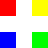

Une seconde, une couleur.
L'image utilise uniquement les couleurs déjà acquises. Maximum : 5 000 000 pixels et 10 Mo.
Événements rares de la fresque
Collection des 148 noms de couleurs CSS
Une couleur RGB encore inconnue est tirée chaque seconde lorsque le jeu est actif. Chaque couleur ne peut être obtenue qu'une seule fois.
Le bouton Pause arrête les tirages jusqu'à la reprise. Les couleurs acquises apparaissent sur la fresque avec un scintillement. Les notifications spéciales dorées restent visibles jusqu’à leur fermeture manuelle.
Utilisez la molette pour zoomer, faites glisser la fresque pour la déplacer, ou cliquez sur Recentrer. Sur mobile, utilisez deux doigts pour zoomer et un doigt pour déplacer ou inspecter.
Le compteur indique la progression globale. La page Trophées révèle les noms CSS des couleurs spéciales obtenues.
Votre progression est enregistrée localement dans ce navigateur. Vous pouvez l'exporter, importer une sauvegarde ou la réinitialiser.